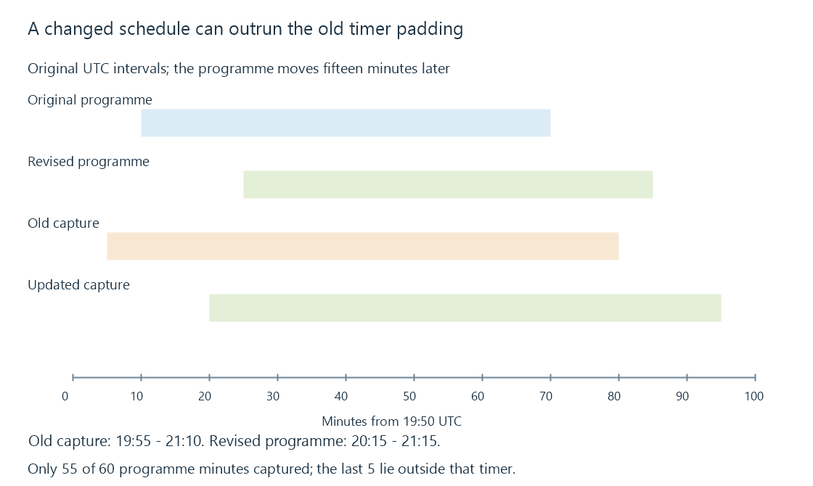

Programme schedule changes and recording plans
Programme schedule changes revise the station, time or content associated with an airing, requiring the loaded guide and recording plan to be evaluated separately.
A recording can be scheduled correctly and still miss the end of a programme that moves later. The original request was based on one schedule revision; the broadcast followed another.
The relevant question is which revision reached each stage before its decision deadline.
A fifteen-minute move exceeds ten-minute end padding
Use an invented airing on one station:
| Revision | Programme interval, UTC |
|---|---|
| Original listing | 20:00–21:00 |
| Revised listing | 20:15–21:15 |
The original timer asks for five minutes before and ten minutes after the original listing. Its capture interval is therefore 19:55–21:10.
If that timer remains unchanged, it covers only 20:15–21:10 of the revised programme: fifty-five of sixty minutes. The final five minutes lie outside the requested interval.

Padding reduced the loss from fifteen minutes to five. It did not identify the new end.
A timer reconciled to the revised listing with the same padding would request 20:10–21:25. That is another interval and another resource demand.
The revision has to travel through several stages
A broadcaster or provider first produces the changed information. The server loads it. A recording planner then decides what to do with a request already associated with that airing.
These can happen at different times. A freshly displayed guide does not by itself prove that an existing timer now has matching boundaries.
Consider the original event identity P/airing/A100:
{
"airing": "P/airing/A100",
"loadedGuide": {"revision": 2, "start": "20:15", "end": "21:15"},
"timer": {"basedOnRevision": 1, "captureStart": "19:55", "captureEnd": "21:10"}
}
These short UTC labels are a same-date teaching projection, not an Emby API object. The mismatch is visible even though the airing ID is unchanged.
The application’s rules determine whether the timer follows the programme, retains a manual interval or requires another action. Emby’s public API distinguishes programme-associated and manual timers; it does not establish every reconciliation policy from the presence of an ID.
A moved airing can change conflicts
The revised end at 21:25 may overlap another request that previously fit. Updating the guide association and checking capacity are separate decisions.
Suppose a second recording needs an independent source acquisition from 21:10. The original first timer ended at that boundary. The revised first timer now overlaps it for fifteen minutes.
That conflict must be evaluated under the actual source sharing and priority rules. Updating metadata cannot make an unavailable resource appear.
Recording conflicts develops those intervals and assignments. Recording padding explains the extra margins.
Missing from an update does not always mean cancelled
A refreshed guide can be a full snapshot, a partial update or a shorter horizon. An event absent from a partial response might simply be outside its returned range.
In an original comparison, revision one covers 18:00–24:00 while the next response covers only 18:00–20:00. The absence of a 21:00 airing from the second response does not establish its cancellation.
A planner needs the provider’s update semantics and coverage before treating absence as deletion. Otherwise, shortening a request window can erase valid future intent.
Station changes and split/merged programme entries add identity questions too. Keeping only a title and start time makes a move resemble a different programme; assuming equal titles always identify one airing can merge unrelated entries.
A changed guide still describes a plan
A programme may overrun without a timely listing revision. A schedule-based timer then has no new endpoint to follow.
Some broadcast signaling can describe event running status, but whether a configured backend and recorder uses it is another implemented capability. Its existence is not a universal guarantee that Emby will extend every live programme automatically.
See Also
- Electronic programme guides
- Recording timers and acquisition deadlines
- Recording padding and programme coverage
- Series recording rules and future airings